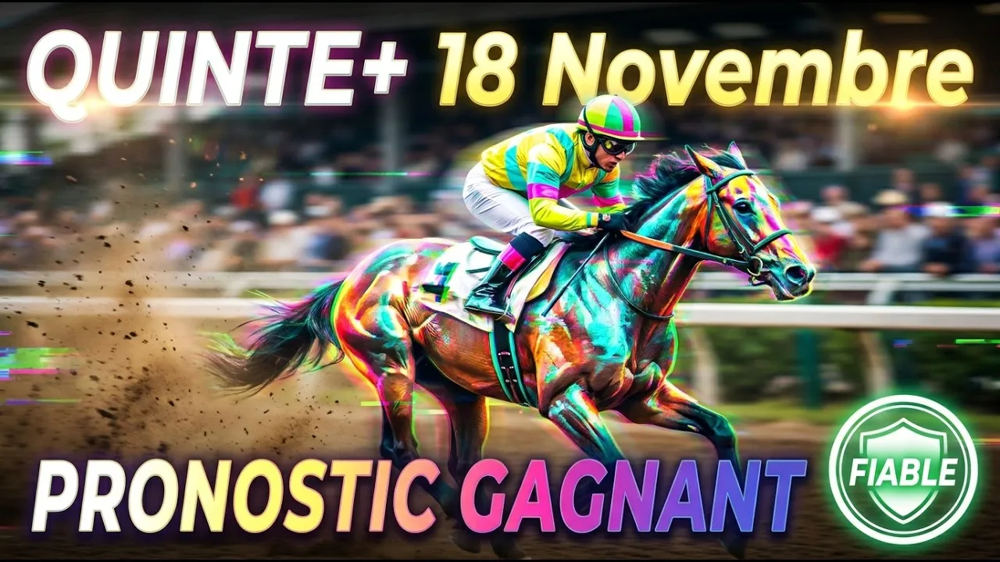

Mercredi à Rouen-Mauquenchy, treizième étape du Grand National du Trot : le Prix Jacques Brion, Groupe 3, dix-huit partants sur la piste en sable, corde à gauche. Trois poteaux de départ, donc trois distances : 2 850 mètres au premier échelon (numéros 1 à 6), 2 875 mètres au second (numéros 7 à 14, 25 mètres à rendre), 2 900 mètres au troisième (numéros 15 à 18, 50 mètres à rendre).
Le profil de Mauquenchy est simple à décrire et difficile à négocier : sol souple, ligne droite sélective, effort long. Rendre 25 ou 50 mètres dans ces conditions suppose une supériorité réelle, pas seulement une bonne forme. Les premiers échelons imposent un rythme régulier pour conserver l'avantage initial ; les suivants doivent trouver un chemin fluide dans un peloton de dix-huit pour placer leur accélération au bon moment.
Un récit rapide du handicap de distance, pour poser le cadre. Au premier échelon, les six chevaux partent devant et n'ont rien à rendre. Leur intérêt est clair : imprimer une allure régulière, sans à-coup, pour que le peloton des 25 mètres ne revienne pas trop vite. Chaque seconde gagnée avant la montée se paie en longueurs à l'arrivée.
Au second échelon, quatorze chevaux rendent 25 mètres, soit environ deux secondes à allure de course. C'est rattrapable pour un cheval de qualité, impossible pour un cheval limité. La variable décisive n'est pas la vitesse pure mais la capacité à recoller sans consommer : un parcours nez au vent sur dix-huit partants coûte plus cher que les 25 mètres eux-mêmes.
Au troisième échelon, quatre chevaux rendent 50 mètres. Deux d'entre eux sont des spécialistes du trot monté qui effectuent ici une rentrée à l'attelage, un troisième est un lauréat classique sous la selle. Sur le papier, ce sont des parcours de préparation, pas des tentatives de victoire. Dans un Quinté, cela change mécaniquement la structure des combinaisons : on construit sur les quatorze premiers numéros, et les quatre derniers servent de variable d'ajustement.
Femelle de six ans menée par Benjamin Rochard pour Julien Le Mer. Elle vient de signer un succès sur la grande piste parisienne, ce qui situe son niveau. Déferrée des quatre pieds, elle s'élance au premier échelon, sans rien à rendre, avec une tactique de prédilection : patienter cachée puis surgir. Sur un tracé où les économies comptent double, ce profil a une vraie valeur.
Hongre de huit ans piloté par Anthony Barrier pour Charles-Antoine Mary. Pieds nus, il est très régulier tant qu'il reste sage, ce qui résume la difficulté : il vient de commettre une incartade alors qu'il luttait pour un bon classement. Face à cette opposition, l'objectif est de rassurer et d'accrocher une allocation. Nous n'allons pas plus loin.
Mâle de cinq ans guidé par Adrien Guarato pour Sébastien Guarato. Frère cadet du champion Bold Eagle, ce qui pose le niveau théorique. Il a joué de malchance après une longue absence, mais se présente ici en montée en puissance, au premier poteau, sans rien rendre. C'est exactement le type d'engagement construit pour un cheval de cette classe : conditions idéales, marge de progression intacte.
Hongre de neuf ans présenté et drivé par Sébastien Hardy. Il affronte des concurrents plus jeunes et plus affûtés, avec pour seule arme son expérience du parcours. Sur le plan arithmétique, partir devant est un avantage ; sur le plan biologique, neuf ans face à cinq ans en novembre, c'est un handicap. Nous le laissons hors sélection.
Mâle de cinq ans préparé et mené par Romain-Christian Larue. Rentrée après quatre mois d'absence, déferré des postérieurs seulement, ce qui indique une préparation prudente. Il peut manquer d'une course, mais son écurie tourne bien. Un cheval à suivre pour la suite du meeting plus que pour aujourd'hui.
Hongre de huit ans associé à Yoann Lebourgeois pour Cyril Raimbaud. Modèle de constance, particulièrement à l'aise sur cette piste, il découvre un engagement idéal à la limite du premier recul : il part donc devant, sans rien rendre, avec un pilote qui connaît la maison. Déferré des quatre pieds. C'est le meilleur rapport conditions de course sur niveau du lot.
Hongre de neuf ans confié à Christophe Martens pour Yannick Desmet. Il rend 25 mètres et se présente ferré, deux paramètres qui se cumulent défavorablement sur un sol souple. Il aura besoin de circonstances de course très favorables, ce qui n'est pas un scénario à miser dans un peloton de dix-huit.
Hongre de huit ans drivé par Théo Duvaldestin pour Thierry Duvaldestin. Très confirmé dans ce circuit du Grand National du Trot, il fait preuve d'une régularité remarquable sur des profils de course variés. Il rend 25 mètres, ce qui reste dans ses cordes, et sa pointe de vitesse finale en fait un candidat sérieux aux premières places. Un des deux meilleurs chevaux du second échelon.
Hongre de huit ans piloté par Paul-Philippe Ploquin pour Julien Le Mer. Récemment sur la grande piste parisienne, il n'a jamais pu s'exprimer, ce qui rend sa dernière ligne illisible. Dur à l'effort, il trouve ici une occasion de rachat, à condition d'obtenir un parcours limpide. Sur le papier, sa puissance vaut mieux que sa cote probable.
Mâle de sept ans présenté et dirigé par Antoine Lhérété. Après une course de rentrée nécessaire, il doit retrouver du rythme pour rivaliser. Au second échelon, avec 25 mètres à rendre et une condition à parfaire, la tâche est mécaniquement trop lourde. Nous écartons.
Hongre de neuf ans mené par Julien Travers pour Stéphane Provoost. Brave compétiteur chevronné, il a disputé de nombreuses étapes de ce Tour de France des trotteurs et connaît donc tous les profils de piste. Il devra sortir le grand jeu pour rendre 25 mètres à des chevaux plus jeunes. Un lot de complément, pas une priorité.
Hongre de sept ans sous la coupe et la drive de Nicolas Bazire. Tenant du titre de la grande finale parisienne de l'an passé, il vient de signer une encourageante quatrième place au niveau supérieur. Il rend 25 mètres, ce qui pèse, mais sa qualité intrinsèque lui confère une chance évidente pour les places. Un profil de finisseur, à jouer dans les combinaisons larges.
Hongre de huit ans confié à Clément Duvaldestin pour Thierry Duvaldestin. Deuxième de la finale du Trophée Vert cet automne, ce trotteur complet retrouve un tracé corde à gauche qu'il apprécie particulièrement. Son recul de 25 mètres est compensé par une pointe de vitesse finale supérieure à la moyenne du lot. Deuxième meilleure chance théorique de la course, derrière Hulysse Digeo.
Hongre de neuf ans préparé et mené par Jean-William Hallais. Remarquable troisième du Prix des Cévennes le mois dernier, ce guerrier généreux se présente au sommet de sa condition physique. Surtout, il est très bien situé au plafond du second échelon : avec les gains les plus élevés autorisés dans ce groupe, il ne rend que 25 mètres. Première chance théorique, et notre base.
Mâle de sept ans associé à Pierre-Yves Verva pour Jean-Rémi Delliaux. Fils de Bold Eagle, il rend 50 mètres et se présente ferré. Les deux paramètres orientent clairement la lecture : c'est un parcours de remise en route en vue d'échéances futures. Sans intérêt pour ce Quinté.
Mâle de sept ans guidé par David Thomain pour Clément Thomain. Excellent spécialiste sous la selle, il effectue une rentrée à l'attelage aux 50 mètres pour peaufiner sa condition. La configuration est un test, pas une tentative. Nous le laissons de côté.
Mâle de sept ans présenté par Pascal Castel. Lauréat classique au trot monté, il s'élance avec un lourd handicap de distance pour accumuler du rythme. Même logique que ses deux voisins de poteau : la course sert de préparation.
Femelle de huit ans confiée à Jean-Loïc-Claude Dersoir pour Joël Hallais. Championne incontestée dans la spécialité de l'étrier, avec une immense carrière, elle effectue ce parcours à l'attelage aux 50 mètres à des fins de préparation. Sa classe est réelle, ses conditions du jour ne le sont pas.
Premier constat : six chevaux partent sans rien rendre, quatorze sont reculés, dont quatre de 50 mètres. Le pronostic se construit donc sur un noyau de quatorze numéros, avec les quatre derniers en variable d'ajustement. Les structurels du Quinté le savent : quand le troisième échelon est composé de chevaux en préparation, la combinaison se resserre naturellement.
Deuxième constat : le poids du plafond des gains. Hulysse Digeo rend 25 mètres, mais il est situé au plafond de son échelon, donc avec les gains les plus élevés autorisés dans ce groupe : il affronte des chevaux dont les gains sont comparables aux siens tout en ne rendant que 25 mètres, là où d'autres profils du même niveau sont reculés de 50. C'est le profil type du cheval sous-estimé par les cotes, et notre base.
Troisième constat : les deux Duvaldestin alignent les deux meilleurs finisseurs du lot. Ialto d'Hertals et Idéal du Rocher partagent la même école, la même lecture de course, et la même capacité à finir vite. Sur un tracé où la ligne droite est sélective, ce critère vaut plus qu'un numéro de poteau. Ajoutons Light My Fire, qui part devant avec une classe théorique supérieure, et Isofou du Chêne, dont la dernière sortie est à effacer.
Enfin, la cote. Iguane de Caponet part devant, à la limite du recul, avec Yoann Lebourgeois : c'est le pari de la situation. Jingle du Pont, tenant de la finale parisienne, est un finisseur de qualité que le rendu de 25 mètres va rendre généreux. Kémia du Chêne arrive d'un succès sur la grande piste. Trois profils complémentaires pour élargir.
Hulysse Digeo porte la base : troisième du Prix des Cévennes, au sommet de sa condition et surtout bien situé au plafond du second échelon. Light My Fire est l'engagement sur mesure du premier poteau, avec la classe de sa famille. Idéal du Rocher et Ialto d'Hertals forment le duo Duvaldestin des finisseurs, Isofou du Chêne arrive sur une occasion de rachat. Pour élargir, Iguane de Caponet profite d'un engagement à la limite du recul, Kémia du Chêne arrive d'un succès sur la grande piste et Jingle du Pont apporte sa qualité de tenant de la finale parisienne.
Base : 14 Hulysse Digeo
Top 5 : 14 - 3 - 13 - 9 - 1
Couplé Placé :
14 Hulysse Digeo et 3 Light My Fire avec 13 Idéal du Rocher, 9 Isofou du Chêne et 1 Kémia du Chêne
Deux sur Quatre :
14 - 3 avec 13 - 9 - 1 - 6
Multi en 5 :
14 - 3 - 13 - 9 - 1
Quinté+ Ordre :
14 - 3 en piliers avec 13 - 9 - 1 - 6 - 8 - 12 en associés
Retrouvez l'analyse vidéo complète sur notre chaîne YouTube Bravo Turf. Abonnez-vous, activez la cloche des notifications et laissez un pouce bleu si ce décryptage vous aide.
Jouez avec modération
Une méthode rigoureuse n'exclut jamais la prudence financière. Ne misez jamais plus que ce que vous pouvez vous permettre de perdre. Fixez-vous un budget hebdomadaire et tenez-vous-y. En cas de difficulté, consultez Joueurs Info Service au 09 74 75 13 13.